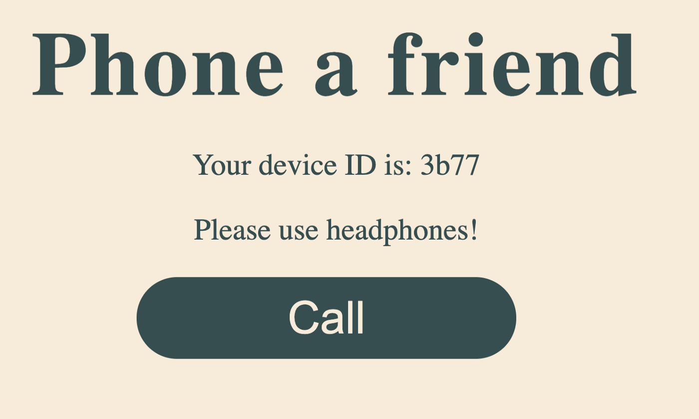

{{WebRTCSidebar}}
{{PreviousMenuNext("Web/API/WebRTC_API/Build_a_phone_with_peerjs/Connect_peers/Get_microphone_permission", "Web/API/WebRTC_API/Build_a_phone_with_peerjs/Connect_peers/Create_a_peer_connection")}}Alright, so you've got the microphone permissions set up. The next step is to make sure each user knows what their peer ID is so that they can make connections. The peerJS framework gives us a bunch of event listeners we can call on the peer we created earlier on.
Let's use the open event to create a listener that displays the peer's ID when it is open. Add the following code to the bottom of script.js:
peer.on('open', function () {
window.caststatus.textContent = `Your device ID is: ${peer.id}`;
});
Here you’re replacing the text in the HTML element with the ID caststatus.
Try reloading the app in your browser. Instead of connecting..., you should see Your device ID is: <peer ID>.

While you're here, you may as well create some functions to display and hide various content, which you'll use later. There are two functions you should create, showCallContent() and showConnectedContent(). These functions will be responsible for showing the call button and showing the hang up button and audio elements when appropriate.
const audioContainer = document.querySelector('.call-container');/**
* Displays the call button and peer ID
* @returns{void}
*/
function showCallContent() {
window.caststatus.textContent = `Your device ID is: ${peer.id}`;
callBtn.hidden = false;
audioContainer.hidden = true;
}
/**
* Displays the audio controls and correct copy
* @returns{void}
*/
function showConnectedContent() {
window.caststatus.textContent = `You're connected`;
callBtn.hidden = true;
audioContainer.hidden = false;
}